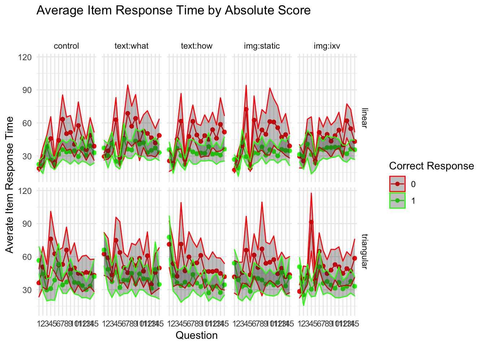

# HACK WD FOR LOCAL RUNNING?# imac = "/Users/amyraefox/Code/SGC-Scaffolding_Graph_Comprehension/SGC-X/ANALYSIS/MAIN"# mbp = "/Users/amyfox/Sites/RESEARCH/SGC—Scaffolding Graph Comprehension/SGC-X/ANALYSIS/MAIN"# setwd(mbp)#IMPORT DATA df_items <-read_rds('analysis/SGC2/data/2-scored-data/sgc2_items.rds')df_subjects <-read_rds('analysis/SGC2/data/2-scored-data/sgc2_participants.rds')
SAMPLE
Data Collection
Data was initially collected (in person, SONA groups in computer lab) in Spring 2017.
CODE
title ="Participants by Condition and (counterbalanced) Task-order"cols =c("Control","Text[what]","Text[how]","Image[static]", "Image[ixv]","Total")cont <-table(df_subjects$order, df_subjects$pretty_condition)cont %>%addmargins() %>%kbl(caption = title, col.names = cols) %>%kable_classic()
Participants by Condition and (counterbalanced) Task-order
Control
Text[what]
Text[how]
Image[static]
Image[ixv]
Total
LM-First
29
31
30
30
34
154
TM-First
32
28
36
32
34
162
Sum
61
59
66
62
68
316
Participants
CODE
#Describe participantssubject.stats <- df_subjects %>% dplyr::select(AGE) %>%unlist() %>%favstats() subject.stats$percent.female <- df_subjects %>%filter(GENDER=="Female") %>%count() %>%pull()/nrow(df_subjects)title ="Descriptive Statistics of Participant Age and Gender"subject.stats %>%kbl (caption = title) %>%kable_classic()%>%footnote(general ="Age in Years", general_title ="Note: ",footnote_as_chunk = T)
Descriptive Statistics of Participant Age and Gender
min
Q1
median
Q3
max
mean
sd
n
missing
percent.female
17
19
20
21
33
20.5
2.2
316
0
0.69
Note: Age in Years
For in person data collection 316 participants (69 % female ) undergraduate STEM majors at a public American University participated in exchange for course credit (age: 17 - 33 years).
RESPONSE ACCURACY
Block Scores
Subject level scores summarize the the response accuracy by a particular participant across all blocks of the two graph comprehension tasks. The task score refers to the number of questions correct (absolute scoring) in each block (linear graph, triangular graph) of the graph comprehension task.
Total absolute scores for the LINEAR graph (n = 316) range from 2 to 15 with a mean score of (M = 10.95, SD = 2.13).
Total absolute scores for the TRIANGULAR graph (n = 316) range from 0 to 15 with a mean score of (M = 8.77, SD = 4.45).
Total absolute scores across the ENTIRE TASK (n = 316) range from 6 to 31 with a mean score of (M = 20.98, SD = 6).
Difference scores (difference between TRIANGULAR and LINEAR) scores for each participant (n = 316) range from -13 to 5 with a mean score of (M = -2.18, SD = 4.11). (note: negative difference scores indicate the participant performed better on the linear block than the triangular block.)
By Block
CODE
#DATA SETUPlong_scores <- df_subjects %>% dplyr::select(subject,pretty_condition,order,lm_scenarios,tm_scenarios,linear_score, triangular_score) %>%pivot_longer(cols =ends_with("score"),names_to ="graph",values_to ="score")#DISTRIBUTION OF SCORES BY GRAPHstats <-favstats(score~graph, data = long_scores)gf_dhistogram(~score, fill =~graph, binwidth =0.5,data = long_scores) %>%gf_vline(xintercept =~mean, color =~graph, data = stats) %>%gf_dens(color =~graph) %>%gf_facet_grid(~ graph) +labs( title ="Distribution of Score (by Block)",subtitle ="Performance on Linear Graph is better than Triangular",x ="Block Score (# correct)", y ="proportion of subjects") +easy_remove_legend()
CODE
##VERTICAL RAINCLOUD USING GGDISTRggplot(long_scores, aes(x = graph, y = score,fill = graph) ) + ggdist::stat_halfeye(side ="left",justification =1.1,width =1, point_colour =NA ) +geom_boxplot(inherit.aes =FALSE, #supress fillmapping =aes(x=graph, y = score),width = .15, outlier.shape =NA ) +geom_point(inherit.aes =FALSE, #supress fillmapping =aes(x=graph, y = score, color = graph),size =1.3,alpha = .3,position =position_jitter( seed =1, width = .05 )) +labs( title ="Distribution of Score (by Block) ",x ="Condition", y ="Score (# correct)") +theme(legend.position ="blank") +coord_cartesian(xlim =c(0.5, NA), clip ="off")
#DISTRIBUTION OF SCORES BY GRAPHstats <-favstats(score ~ pretty_condition+graph, data = long_scores)gf_dhistogram(~score, fill =~pretty_condition, binwidth =0.5,data = long_scores) %>%gf_dens(color =~pretty_condition) %>%# gf_vline(xintercept = ~mean, data = stats) %>% gf_facet_grid(pretty_condition ~ graph) +labs( title ="Distribution of Score (by Condition)",subtitle ="",x ="Block Score (# correct)", y ="number of subjects") +easy_remove_legend()
CODE
##VERTICAL RAINCLOUD USING GGDISTRggplot(long_scores, aes(x = graph, y = score,fill = graph) ) + ggdist::stat_halfeye(side ="left",justification =1.1,width =1, point_colour =NA ) +geom_boxplot(inherit.aes =FALSE, #supress fillmapping =aes(x=graph, y = score),width = .15, outlier.shape =NA ) +geom_point(inherit.aes =FALSE, #supress fillmapping =aes(x=graph, y = score, color = graph),size =1.3,alpha = .3,position =position_jitter( seed =1, width = .05 )) +facet_wrap(~pretty_condition) +labs( title ="Distribution of Score (by Condition) ",x ="Condition", y ="Score (# correct)") +theme(legend.position ="blank") +coord_cartesian(xlim =c(0.5, NA), clip ="off")
By Order
CODE
#DISTRIBUTION OF SCORES BY GRAPHgf_dhistogram(~score, fill =~graph, binwidth =0.5,data = long_scores) %>%gf_dens(color =~graph) %>%gf_facet_grid(graph~order) +labs( title ="Distribution of Score (by Order)",subtitle ="",x ="Block Score (# correct)", y ="number of subjects") +easy_remove_legend()
CODE
##VERTICAL RAINCLOUD USING GGDISTRggplot(long_scores, aes(x = graph, y = score,fill = graph) ) + ggdist::stat_halfeye(side ="left",justification =1.1,width =1, point_colour =NA ) +geom_boxplot(inherit.aes =FALSE, #supress fillmapping =aes(x=graph, y = score),width = .15, outlier.shape =NA ) +geom_point(inherit.aes =FALSE, #supress fillmapping =aes(x=graph, y = score, color = graph),size =1.3,alpha = .3,position =position_jitter( seed =1, width = .05 )) +facet_wrap(~order) +labs( title ="Distribution of Score (by Order)",x ="Graph", y ="Score (# correct)") +theme(legend.position ="blank") +coord_cartesian(xlim =c(0.5, NA), clip ="off")
By Scenario
CODE
#DISTRIBUTION OF SCORES BY GRAPHgf_dhistogram(~score, fill =~graph, binwidth =0.5,data = long_scores) %>%gf_dens(color =~graph) %>%gf_facet_grid(graph~tm_scenarios) +labs( title ="Distribution of Score (by Scenario)",subtitle ="",x ="Block Score (# correct)", y ="number of subjects") +easy_remove_legend()
CODE
##VERTICAL RAINCLOUD USING GGDISTRggplot(long_scores, aes(x = graph, y = score,fill = graph) ) + ggdist::stat_halfeye(side ="left",justification =1.1,width =1, point_colour =NA ) +geom_boxplot(inherit.aes =FALSE, #supress fillmapping =aes(x=graph, y = score),width = .15, outlier.shape =NA ) +geom_point(inherit.aes =FALSE, #supress fillmapping =aes(x=graph, y = score, color = graph),size =1.3,alpha = .3,position =position_jitter( seed =1, width = .05 )) +facet_wrap(~tm_scenarios) +labs( title ="Distribution of Score (by Scenario) ",x ="Graph", y ="Score (# correct)") +theme(legend.position ="blank") +coord_cartesian(xlim =c(0.5, NA), clip ="off")
Block Difference Scores
CODE
#DIFFERENCE SCORE BY SUBJECTgf_line(score~graph, group=~subject, color =~order, data = long_scores) %>%gf_facet_grid(order~pretty_condition) +labs(title ="Block Scores by Condition") +easy_remove_legend()
CODE
#DISTRIBUTION OF SCORES BY GRAPHgf_dhistogram(~score_diff, fill =~pretty_condition, binwidth =0.5,data = df_subjects) %>%# gf_dens(color = ~graph) %>% gf_facet_grid(order~pretty_condition) +labs( title ="Block Difference Score (by Condition)",subtitle ="",x ="Difference Score (Triangular - Linear)", y ="number of subjects") +easy_remove_legend()
Item Scores
Task Accuracy summarized over items rather than subjects
CODE
df <- df_items %>%filter(graph %in%c("linear","triangular"))#VISUALIZE distribution of response accuracy across ITEMS#HISTOGRAM by Condition# gf_props(~correct, data = df) %>% # gf_facet_grid(pretty_condition~graph, labeller = label_both) +# labs(x = "Item Accuracy",# title = "Item Accuracy by Graph and Condition",# subtitle="")#STACKED BAR CHARTdf %>%ggplot(data = .,mapping =aes(x = graph,fill = score)) +geom_bar(position ="fill" ) +#,color = "black") +scale_fill_brewer(palette ="Set1") +facet_wrap(~pretty_condition) +labs(y ="Proportion of Items",title ="Item Accuracy by Graph and Condition",x ="Condition",fill ="",subtitle="")
CODE
#HISTOGRAM# gf_props(~correct, data = df) %>% # gf_facet_grid(scenario~graph, labeller = label_both) +# labs(x = "Item Accuracy",# title = "Item Accuracy by Graph and (TM Graph) Scenario",# subtitle="")#STACKED BAR CHARTdf %>%ggplot(data = .,mapping =aes(x = graph,fill = score)) +geom_bar(position ="fill" ) +#,color = "black") +scale_fill_brewer(palette ="Set1") +facet_wrap(~scenario) +labs(y ="Proportion of Items",title ="Item Accuracy by Graph and (TM Graph) Scenario",x ="TM Graph Scenario",fill ="",subtitle="If the scenarios are of equal difficulty, these should be the same")
CODE
#HISTOGRAM# gf_props(~correct, data = df) %>% # gf_facet_grid(order~graph, labeller = label_both) +# labs(x = "Item Accuracy",# title = "Item Accuracy by Graph and Block Order",# subtitle="")#STACKED BAR CHARTdf %>%ggplot(data = .,mapping =aes(x = graph,fill = score)) +geom_bar(position ="fill" ) +#,color = "black") +scale_fill_brewer(palette ="Set1") +facet_wrap(~order) +labs(y ="Proportion of Items",title ="Item Accuracy by Graph and Block Order",x ="Block Order",fill ="",subtitle="")
CODE
#STACKED BAR CHARTdf %>%ggplot(data = .,mapping =aes(x = graph,fill = score)) +geom_bar(position ="fill" ) +#,color = "black") +scale_fill_brewer(palette ="Set1") +facet_wrap(~q) +labs( #y = "Proportion of Items",title ="Item Accuracy by Graph and Question Number",x ="Question Number",fill ="",subtitle="")
RESPONSE LATENCY
Time on Block
CODE
title ="Descriptive Statistics of Response Time by Block"time.stats <-rbind("linear.block"= df_subjects %>% dplyr::select(LM_T_M) %>%unlist() %>%favstats(),"triangular.block"= df_subjects %>% dplyr::select(TM_T_M) %>%unlist() %>%favstats(),"block.differences"= df_subjects %>% dplyr::select(DIFF_T_M) %>%unlist() %>%favstats(),"total"= df_subjects %>% dplyr::select(TOTAL_T_M) %>%unlist() %>%favstats())time.stats %>%kbl (caption = title) %>%kable_classic() %>%footnote(general ="time in minutes; DIFF = triangular - linear",general_title ="Note: ",footnote_as_chunk = T)
Descriptive Statistics of Response Time by Block
min
Q1
median
Q3
max
mean
sd
n
missing
linear.block
3.92
7.63
8.87
10.440
23.1
9.20
2.53
316
0
triangular.block
3.14
8.82
10.40
12.502
26.8
10.85
3.28
316
0
block.differences
-12.66
-3.15
-1.42
0.472
12.9
-1.64
3.09
316
0
total
21.91
34.66
39.66
45.853
66.1
40.42
8.54
316
0
Note: time in minutes; DIFF = triangular - linear
Response time (in minutes) for the LINEAR graph (n = 316) range from 3.92 to 23.06 with a mean time of (M = 9.2, SD = 2.53).
Response time (in minutes) for the TRIANGULAR graph (n = 316) range from 3.14 to 26.82 with a mean time of (M = 10.85, SD = 3.28).
Response time (in minutes) across the ENTIRE TASK (n = 316) range from 21.91 to 66.12 with a mean time of (M = 40.42, SD = 8.54).
Difference in response time (in minutes) (difference between TRIANGULAR - LINEAR) for each participant (n = 316) range from -12.66 to 12.95 with a mean difference in time of (M = -1.64, SD = 3.09). (note: negative difference scores indicate the participant performed faster on the linear block than the triangular block.)
CODE
#DATA SETUPlong_times <- df_subjects %>% dplyr::select(subject,pretty_condition,order,lm_scenarios,tm_scenarios, LM_T_M, TM_T_M) %>%pivot_longer(cols =ends_with("M"),names_to ="graph",values_to ="time") %>%mutate(graph =recode(graph, "LM_T_M"="Linear Graph", "TM_T_M"="Triangular Graph") )#DISTRIBUTION OF SCORES BY GRAPHstats <-favstats(time~graph, data = long_times)gf_dhistogram(~time, fill =~graph, binwidth =0.5,data = long_times) %>%gf_vline(xintercept =~mean, color =~graph, data = stats) %>%gf_dens(color =~graph) %>%gf_facet_grid(~ graph) +labs( title ="Distribution of Response Time",subtitle ="Performance on Linear Graph is faster than Triangular",x ="Block Score (# correct)", y ="number of subjects") +easy_remove_legend()
CODE
##VERTICAL RAINCLOUD USING GGDISTRggplot(long_times, aes(x = graph, y = time,fill = graph) ) + ggdist::stat_halfeye(side ="left",justification =1.1,width =1, point_colour =NA ) +geom_boxplot(inherit.aes =FALSE, #supress fillmapping =aes(x=graph, y = time),width = .15, outlier.shape =NA ) +geom_point(inherit.aes =FALSE, #supress fillmapping =aes(x=graph, y = time, color = graph),size =1.3,alpha = .3,position =position_jitter( seed =1, width = .05 )) +labs( title ="Distribution of Response Time by Graph ",x ="Condition", y ="Response Time (minutes)") +theme(legend.position ="blank") +coord_cartesian(xlim =c(0.5, NA), clip ="off")
CODE
#DISTRIBUTION OF TIME BY GRAPHstats <-favstats(time ~ pretty_condition+graph, data = long_times)gf_dhistogram(~time, fill =~pretty_condition, binwidth =0.5,data = long_times) %>%gf_dens(color =~pretty_condition) %>%gf_facet_grid(pretty_condition ~ graph) +labs( title ="Distribution of Response Time (by Condition)",subtitle ="",x ="Response Time (minutes)", y ="number of subjects") +easy_remove_legend()
CODE
##VERTICAL RAINCLOUD USING GGDISTRggplot(long_times, aes(x = graph, y = time,fill = graph) ) + ggdist::stat_halfeye(side ="left",justification =1.1,width =1, point_colour =NA ) +geom_boxplot(inherit.aes =FALSE, #supress fillmapping =aes(x=graph, y = time),width = .15, outlier.shape =NA ) +geom_point(inherit.aes =FALSE, #supress fillmapping =aes(x=graph, y = time, color = graph),size =1.3,alpha = .3,position =position_jitter( seed =1, width = .05 )) +facet_wrap(~pretty_condition) +labs( title ="Distribution of Response Time by Graph ",x ="Condition", y ="Response Time (minutes)") +theme(legend.position ="blank") +coord_cartesian(xlim =c(0.5, NA), clip ="off")
CODE
#DISTRIBUTION OF TIMES BY GRAPHgf_dhistogram(~time, fill =~graph, binwidth =0.5,data = long_times) %>%gf_dens(color =~graph) %>%gf_facet_grid(graph~order) +labs( title ="Distribution of Response Time (by Order)",subtitle ="",x ="Response Time (minutes)", y ="number of subjects") +easy_remove_legend()
CODE
##VERTICAL RAINCLOUD USING GGDISTRggplot(long_times, aes(x = graph, y = time,fill = graph) ) + ggdist::stat_halfeye(side ="left",justification =1.1,width =1, point_colour =NA ) +geom_boxplot(inherit.aes =FALSE, #supress fillmapping =aes(x=graph, y = time),width = .15, outlier.shape =NA ) +geom_point(inherit.aes =FALSE, #supress fillmapping =aes(x=graph, y = time, color = graph),size =1.3,alpha = .3,position =position_jitter( seed =1, width = .05 )) +facet_wrap(~order) +labs( title ="Distribution of Response Time (by Order)",x ="", y ="Response Time (minutes)") +theme(legend.position ="blank") +coord_cartesian(xlim =c(0.5, NA), clip ="off")
CODE
#DISTRIBUTION OF SCORES BY GRAPHgf_dhistogram(~time, fill =~graph, binwidth =0.5,data = long_times) %>%gf_dens(color =~graph) %>%gf_facet_grid(graph~tm_scenarios) +labs( title ="Distribution of Response Time (by Scenario)",subtitle ="",x ="Response Time (minutes)", y ="number of subjects") +easy_remove_legend()
CODE
##VERTICAL RAINCLOUD USING GGDISTRggplot(long_times, aes(x = graph, y = time,fill = graph) ) + ggdist::stat_halfeye(side ="left",justification =1.1,width =1, point_colour =NA ) +geom_boxplot(inherit.aes =FALSE, #supress fillmapping =aes(x=graph, y = time),width = .15, outlier.shape =NA ) +geom_point(inherit.aes =FALSE, #supress fillmapping =aes(x=graph, y = time, color = graph),size =1.3,alpha = .3,position =position_jitter( seed =1, width = .05 )) +facet_wrap(~tm_scenarios) +labs( title ="Distribution of Response Time (by Scenario) ",x ="TM Scenario", y ="Respone Time (minutes)") +theme(legend.position ="blank") +coord_cartesian(xlim =c(0.5, NA), clip ="off")
CODE
#DIFFERENCE TIME BY SUBJECTgf_line(time~graph, group=~subject, color =~order, data = long_times) %>%gf_facet_grid(order~pretty_condition) +labs(title ="Response Times by Condition") +easy_remove_legend()
CODE
#DISTRIBUTION OF SCORES BY GRAPHgf_dhistogram(~DIFF_T_M, fill =~pretty_condition, binwidth =0.5,data = df_subjects) %>%# gf_dens(color = ~graph) %>% gf_facet_grid(order~pretty_condition) +labs( title ="Block Time Difference (by Condition)",subtitle ="",x ="Difference Time (Triangular - Linear)", y ="number of subjects") +easy_remove_legend()
Time on Item
CODE
title ="Descriptive Statistics of Item Response Time by Block"time.stats <-rbind("linear.block"= df_items %>%filter(graph =="linear") %>% dplyr::select(rt_sec) %>%unlist() %>%favstats(),"triangular.block"= df_items %>%filter(graph =="triangular") %>% dplyr::select(rt_sec) %>%unlist() %>%favstats())time.stats %>%kbl (caption = title) %>%kable_classic() %>%footnote(general ="time in minutes; DIFF = triangular - linear",general_title ="Note: ",footnote_as_chunk = T)
Descriptive Statistics of Item Response Time by Block
min
Q1
median
Q3
max
mean
sd
n
missing
linear.block
4
21
31
45
302
36.8
24.2
4740
0
triangular.block
2
23
36
55
401
43.4
30.8
4739
0
Note: time in minutes; DIFF = triangular - linear
Item Response time (in seconds) for the LINEAR graph (n = 4740) range from 4 to 302 with a mean time of (M = 36.81, SD = 24.21).
Item Response time (in seconds) for the TRIANGULAR graph (n = 4739) range from 2 to 401 with a mean time of (M = 43.38, SD = 30.83).
CODE
#DISTRIBUTION OF SCORES BY GRAPHstats <-favstats(rt_sec~graph, data = df)gf_dhistogram(~rt_sec, fill =~graph, binwidth =0.5,data = df) %>%gf_vline(xintercept =~mean, color =~graph, data = stats) %>%gf_dens(color =~graph) %>%gf_facet_grid(~ graph) +labs( title ="Distribution of Response Time",subtitle ="Performance on Linear Graph is faster than Triangular",x ="Block Score (# correct)", y ="number of subjects") +easy_remove_legend()
##VERTICAL RAINCLOUD USING GGDISTRggplot(df, aes(x = graph, y = rt_sec,fill = graph) ) + ggdist::stat_halfeye(side ="left",justification =1.1,width =1, point_colour =NA ) +geom_boxplot(inherit.aes =FALSE, #supress fillmapping =aes(x=graph, y = rt_sec),width = .15, outlier.shape =NA ) +geom_point(inherit.aes =FALSE, #supress fillmapping =aes(x=graph, y = rt_sec, color = graph),size =1.3,alpha = .05,position =position_jitter( seed =1, width = .05 )) +labs( title ="Distribution of Item Response Time by Graph ",x ="Condition", y ="Response Time (seconds)") +theme(legend.position ="blank") +coord_cartesian(xlim =c(0.5, NA), clip ="off")
CODE
#DISTRIBUTION OF TIME BY GRAPHstats <-favstats(rt_sec ~ pretty_condition+graph, data = df)gf_dhistogram(~rt_sec, fill =~pretty_condition, binwidth =0.5,data = df) %>%gf_dens(color =~pretty_condition) %>%gf_facet_grid(pretty_condition ~ graph) +labs( title ="Distribution of Item Response Time (by Condition)",subtitle ="",x ="Response Time (seconds)", y ="proportion of items") +easy_remove_legend()
CODE
##VERTICAL RAINCLOUD USING GGDISTRggplot(df, aes(x = graph, y = rt_sec,fill = graph) ) + ggdist::stat_halfeye(side ="left",justification =1.1,width =1, point_colour =NA ) +geom_boxplot(inherit.aes =FALSE, #supress fillmapping =aes(x=graph, y = rt_sec),width = .15, outlier.shape =NA ) +geom_point(inherit.aes =FALSE, #supress fillmapping =aes(x=graph, y = rt_sec, color = graph),size =1.3,alpha = .3,position =position_jitter( seed =1, width = .05 )) +facet_wrap(~pretty_condition) +labs( title ="Distribution of Item Response Time by Graph ",x ="Condition", y ="Response Time (seconds)") +theme(legend.position ="blank") +coord_cartesian(xlim =c(0.5, NA), clip ="off")
CODE
#DISTRIBUTION OF TIMES BY GRAPHgf_dhistogram(~rt_sec, fill =~graph, binwidth =0.5,data = df) %>%gf_dens(color =~graph) %>%gf_facet_grid(graph~order) +labs( title ="Distribution of Item Response Time (by Order)",subtitle ="",x ="Item Response Time (sec)", y ="number of subjects") +easy_remove_legend()
CODE
##VERTICAL RAINCLOUD USING GGDISTRggplot(df, aes(x = graph, y = rt_sec,fill = graph) ) + ggdist::stat_halfeye(side ="left",justification =1.1,width =1, point_colour =NA ) +geom_boxplot(inherit.aes =FALSE, #supress fillmapping =aes(x=graph, y = rt_sec),width = .15, outlier.shape =NA ) +geom_point(inherit.aes =FALSE, #supress fillmapping =aes(x=graph, y = rt_sec, color = graph),size =1.3,alpha = .3,position =position_jitter( seed =1, width = .05 )) +facet_wrap(~order) +labs( title ="Distribution of Item Response Time (by Order)",x ="", y ="Response Time (seconds)") +theme(legend.position ="blank") +coord_cartesian(xlim =c(0.5, NA), clip ="off")
CODE
#DISTRIBUTION OF SCORES BY GRAPHgf_dhistogram(~rt_sec, fill =~graph, binwidth =0.5,data = df) %>%gf_dens(color =~graph) %>%gf_facet_grid(graph~scenario) +labs( title ="Distribution of Item Response Time (by Scenario)",subtitle ="",x ="Response Time (seconds)", y ="number of subjects") +easy_remove_legend()
CODE
##VERTICAL RAINCLOUD USING GGDISTRggplot(df, aes(x = graph, y = rt_sec,fill = graph) ) + ggdist::stat_halfeye(side ="left",justification =1.1,width =1, point_colour =NA ) +geom_boxplot(inherit.aes =FALSE, #supress fillmapping =aes(x=graph, y = rt_sec),width = .15, outlier.shape =NA ) +geom_point(inherit.aes =FALSE, #supress fillmapping =aes(x=graph, y = rt_sec, color = graph),size =1.3,alpha = .3,position =position_jitter( seed =1, width = .05 )) +facet_wrap(~scenario) +labs( title ="Distribution of Item Response Time (by Scenario) ",x ="TM Scenario", y ="Item Response Time (seconds)") +theme(legend.position ="blank") +coord_cartesian(xlim =c(0.5, NA), clip ="off")
DRAWING TASK
Finally, we explore the distribution of graph types produced by participants during the graph drawing task.
CODE
gf_props(~draw_type, data = df_subjects) %>%gf_facet_wrap(~pretty_condition) +labs(title ="Type of Graph drawn by Participant" )
EXPLORING RELATIONSHIPS
Block Accuracy
CODE
#SCATTERPLOT gf_jitter( linear_score ~ triangular_score, data = df_subjects, alpha =0.5, color=~pretty_condition) %>%gf_facet_wrap(~pretty_condition) +labs(title ="Relationship between Linear and Triangular Block Scores",subtitle ="", x ="Linear Score", y ="Triangular Score" ) +easy_remove_legend()
Time + Accuracy
CODE
q.stats <- df %>% dplyr::group_by(graph, q, pretty_condition, score) %>% dplyr::summarise(m =mean(rt_sec),sd =sd(rt_sec),sd = tidyr::replace_na(sd,0),lo = m-sd/2,hi = m+sd/2,group =paste(pretty_condition,"-",score))gf_line( m ~ q, group =~group, color =~score, data = q.stats) %>%gf_point() %>%gf_ribbon(lo+hi~q) %>%gf_facet_grid(graph~pretty_condition) +scale_color_manual(values=c("red","green")) +labs(title ="Average Item Response Time by Absolute Score",subtitle ="",x ="Question", y ="Averate Item Response Time", color="Correct Response")

CODE
#GGDIST LINERIBBONdf %>%ggplot(aes(y = rt_sec, x = q, fill = pretty_condition)) +stat_lineribbon(alpha =1/4, point_interval ="mean_qi") +facet_grid(graph~pretty_condition)+labs(title ="Average Item Response Time by Absolute Score",subtitle ="",x ="Question", y ="Averate Item Response Time", color="Correct Response")